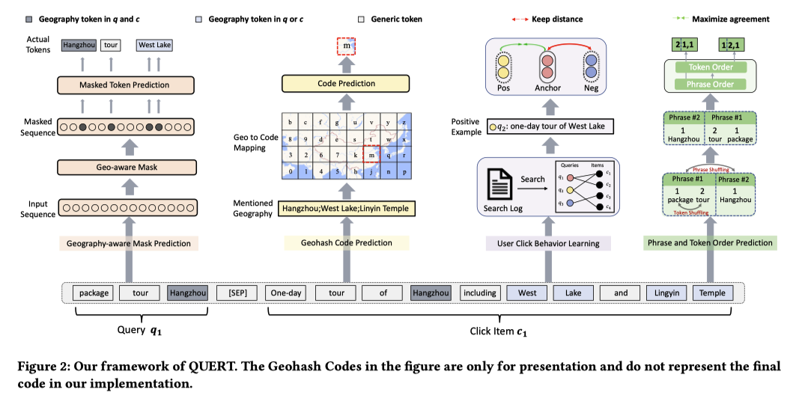
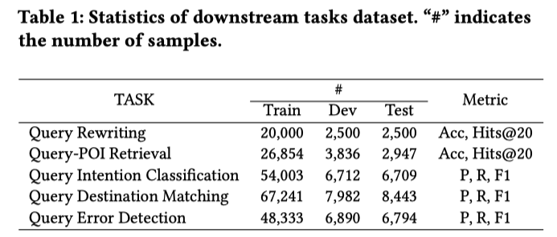

著者
Jian Xie (Fudan University)
Yidan Liang (Alibaba)
Jingping Liu (East China University of Science and Technology)
Yanghua Xiao (Fudan University)
Baohua Wu (Alibaba)
Shenghua Ni (Alibaba)
宿泊予約サイトの検索等(POI検索、クエリrewrite等)につかうモデルのための事前学習方法を提案
(感想)
宿泊特化というわけではないので、ローカル検索ならなんでも使えそう
クリックデータを使っていて果たしてこれは事前学習と言えるのかみたいなことは思った
けどDownstreamタスクとは違うからOKか、でもそうすると境界線は難しいなと思ったし、すくなくともBERTと比較するのはフェアではないと思った
一般的に使用されている事前学習済みモデルは、特定のドメインに直接使うとしばしば性能劣化する
事前学習段階のコーパスとターゲットタスクのデータとのミスマッチが原因
この問題に対処するため、先行研究では、バイオ医学のためのBioBERT [13]、金融のためのFinBERT [1]、数学の問題理解のためのCOMUS [8]などのように、ドメインコーパスを使用してドメイン固有のモデルを継続的に事前学習することが提案されている
本研究では宿泊特化の言語モデルの事前学習方法を提案する (宿泊特化のNER[3]や検索ランキング[29]はあった)
宿泊領域の検索クエリは特徴が3つあって、すべてのトークンを平等に扱う古典的なMLMは向いていない
特徴1: 検索クエリに地域が含まれる (例: 「package tour Hangzhou(中国の市)」)
特徴2: 検索クエリは異なるが、それらで同じアイテムがクリックされる
特徴3: フレーズの順番やトークンの順番が入れ替わっても意図は変わらない (例: 「package tour | Hangzhou」、「Hangzhou | package tour」(フレーズ入れ替え)、「tour package | Hangzhou」(トークン入れ替え(タイポ)))
4つのタスクを提案し、それらの和を最適化して学習する (てっきり各損失にハイパラ係数かけると思ったら、コード見る感じハイパラ係数はなくてただ足しているだけ)
目的、モチベ
地理情報を認識できるようにすることを目的としている
なぜなら、旅行ドメインの検索において、クエリのほとんどが地理情報を含んでいることが観察されるから
Fliggyアプリ(アリババが運営するオンライン旅行サービス)から1,000のクエリをランダムサンプリングし、内製の辞書によって地理情報を含んでいるか判定したところ、65%のクエリで含んでいた
手法
クエリとそのクエリでクリックされたアイテム(のタイトル)を特殊トークン[SEP]で連結する
クエリは短いので事前学習には向かず、モデルの表現能力を弱めるリスクを高めるらしい (4.2.1に詳細)
クリックされたアイテムはクエリとマッチしていて、クエリの情報を補足するのに適している
そこに含まれる地理フレーズを特定する (Alibaba製AliNLPを使ってNERを行い特定するらしい)
そして3つのマスク戦略を適用して、MLMする
クエリとアイテムの両方に含まれる地理フレーズに対して、マスク確率を50%に設定 (両方マスクしてしまうのと過剰のなので一方がマスクされたらもう一方はマスクしない)
どちらか一方のみに現れる地理フレーズには30%のマスク確率を割り当てる
残りのトークンについては、BERTと同様、15%をマスクする
目的、モチベ
Geo-MPに加えて地理情報を理解するためにGeo-CPを導入する
例えば、POI検索ランキングにおいて地理の理解は必要である
クエリが「Hangzhou tour」の場合、 Hangzhouにある有名なPOIであるWest-Lakeは想起されるべきである
しかし古典的なMLMでは意味レベルで地理を理解することができるが、地理的階層関係や距離関係を取られることができない
手法
ざっくりいうと、入力にある地域をジオハッシュ化して各Bitを当てる分類問題にする感じ
出典: What is Geohashing? https://www.pubnub.com/guides/what-is-geohashing/¶
(例えば緯度経度=(57.64911,10.40744)ならu4pruydqqvj (11ビット))
アイテム中のすべての地理フレーズの緯度と経度を特定からジオハッシュコードを得る(アイテムは業者から入稿されるので信頼度が高いため、アイテム内の地理のみを考慮する)
以下の処理を行い、ひとつのジオハッシュコードを作る
地理フレーズが1つの場合: そのまま用いる
地理フレーズが1つもない場合: Nビットすべてを特殊トークン*で埋める
地理フレーズが複数ある場合: 先頭のビットから見ていき共通しているビットはそれらをそのまま用いる、残りは”*”で埋める
各ビットごとに、そのビットを当てる分類問題を解く (コード見た感じ、Bertのpooling output(CLSではなく)をLinear層(各ビットごとに用意)に入れてcross entropy lossを最適化)
目的、モチベ
「package tour Hangzho」と「one-day tour of West Lake」というクエリは関連しており、どちらも西湖と霊隠寺の訪問を含む杭州のツアーというアイテムに関連しているが、文字面的に似ているわけではない
従来のMLMでは、この暗黙の関連性を捉えることができない
それを解決したい
手法
query \(q_i\) とそのクエリでクリックされたアイテム \(c_i\) , \(c_i\) がクリックされているtop Kのクエリ群 \(G\) が与えられる
\(G\) からクエリをランダムに一つ選んで \(q^{\text{pos}}_i\) とし、\(q_i, q^{\text{pos}}_i\) をpositive pairとしてcontrastive learningする
negative pairを同じbatch内のペア (in-batch negative)
目的、モチベ
以下のようなケースでクエリは揺れるが意図は変わらないので、揺れたクエリでも表現が近くなるように学習したい
ユーザーはフレーズ順序を入れ替えて検索してくる: 「package tour | Hangzhou」と「Hangzhou | package tour」
ユーザーはトークン順序を入れ替えて検索してくる: 「tour package | Hangzhou」 (ランダムに選んだ検索結果が悪かったケース5000件のうち、5.3%がトークン並び替えによるものだったとのこと)
手法 (phrase order prediction)
元のクエリが 「package tour | Hangzhou」としたとき、フレーズ順序をtokenごとにつけて (1, 1, 2)と定義する (どのようにフレーズ分割するかは記述がなかった)
フレーズをランダムシャッフルしたときの結果が「Hangzhou | package tour」とするとこれのフレーズ順序は (2, 1, 1) になる
そして、「Hangzhou | package tour」から(2, 1, 1)を当てる問題を解く (分類問題)
手法 (token order prediction)
元のクエリが 「package tour | Hangzhou」としたとき、トークン順序をtokenごとにつけて (1, 2, 1)と定義する (フレーズが変わるとリセットされて1に戻る)
トークンをランダムシャッフルしたときの結果が「Hangzhou | tour package」とするとこれのフレーズ順序は (1, 2, 1) になる
そして、「Hangzhou | tour package」から(1,2,1)を当てる問題を解く (分類問題)
Downstream Task
QR: Query Rewriting (クエリ訂正)
QPR: Query-POI Retrieval (POIレコメンド)
QIC: Query Intention Classification (クエリ意図を当てる分類問題 (意図は20種類のカテゴリ))
QDM: Query Destination Matching (クエリと候補都市群が与えられ、その都市がクエリの目的地であるかどうかを判定)
QED: Query Error Detection (タイポやトークン順序の誤りがあるトークンの判定)
データ
Fliggyの実際のデータを使う
各タスクのデータサイズと評価指標
比較手法
BERT[5]: Googleがリリースした中国語版のやつ
RoBERTa[17]: 中国語版 RoBERTa-wwm [4]
ERNIE[24]: TransformerベースのPLMでトークン・レベルのマスキングに加えて、エンティティ・レベルとフレーズ・レベルのマスキング戦略を導入。
StructBERT[27]: BERTの亜種。単語構造を理解するタスクを追加し、モデルに正しい順序を再構築させるとのこと
Mengzi[32]: BERTの亜種。軽量でながら強力。Mengziは、複数の中国語NLPタスクで卓越した性能。
提案法(QUERT)がSOTAとのこと
BERTと比較して平均2.02%向上
QIC(クエリ意図分類)で顕著な性能向上
BERTq はクエリコーパスからのみ学習したらしく(具体的な記述なし)、素のBERTよりも性能が悪い→クエリのみコーパスでは表現学習がうまく行かず、テキスト理解能力が弱まった、と主張
BERTq+cだとBERTより改善しており、クリックされたアイテムがクエリ理解を深めるのに適しているという著者らの推測を妥当なものであることの裏付けとなっている、と主張
圧倒的に勝てる (そりゃそうでしょう)
どのタスクを抜いても性能低下
Geo-MPを抜くとすべてのタスクで性能低下
UCBLは文レベルのタスク（QICとQDM）で需要な役割を果たしている
PTOPを抜くとQEDのF1スコア（86.99%）が元の BERT（88.35%）よりも低くなっている
PTOP以外のタスクによって論理的バイアスが生まれてしまったのを是正していると主張
Downstream Taskの教師データ数がすくないと顕著に差がでる (もっと教師データ数あればBERTと差が出ないのではと思った)
地理フレーズをマスクして、マスクしたところを当てた結果
BERTはぜんぜん当てられないが、+Geo-MPは当たられるか、正解に近いものを出している
10のメージャー都市からそれぞれ500の人気POIを選択肢し、embedding化しt-SNEで可視化したもの
BERTはぜんぜんまとまりがないが、+Geo-CPはきれいに分けられている
\(q_i, q^{\text{pos}}_i\) のcos類似度を取ったところ (ランダム500ペア)、BERTは0.7758, BERT+UCBLは0.8278
トークンの順序が入れ替わっているかどうかを判定した結果
Fliggy APPでABテストした
解析されていないクエリ（例えば、誤入力クエリや初見クエリ）が与えられた場合、それをエンコーダしてその埋め込み得て、それとデータベース内の他の解析済みクエリの埋め込みとの間のcos類似度を計算
類似度の高い上位20のクエリを類似クエリとして選択し、これらの類似クエリに対応する検索結果を得る
その検索結果を解析されていないクエリに対するレコメンドとする
10%バケット2つ用意 (ユーザー単位で分割)
一方のバケットにはエンコーダーとしてBERTを使用、もう一方にはQUERTを仕様
指標は以下の２つでどちらも向上
Unique-CTR (たぶんユーザー単位のCTR) : 0.89%増加
Page-CTR (たぶんページビューあたりのCTR) : 1.03%増加
{kind=link}
{kind=link}
{kind=link}
{kind=link}
{kind=link}
{kind=link}
{kind=link}
{kind=link}
{kind=link}
{kind=link}
{kind=link}